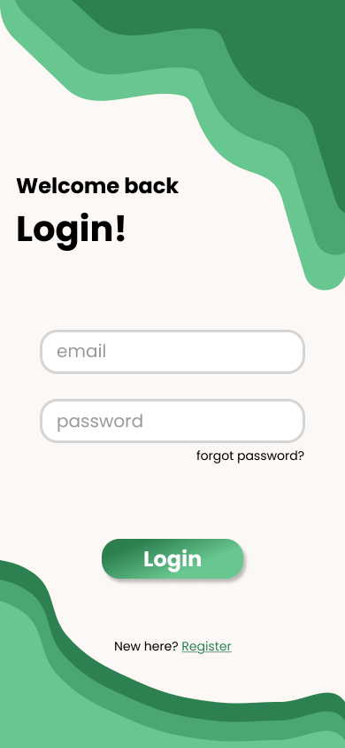
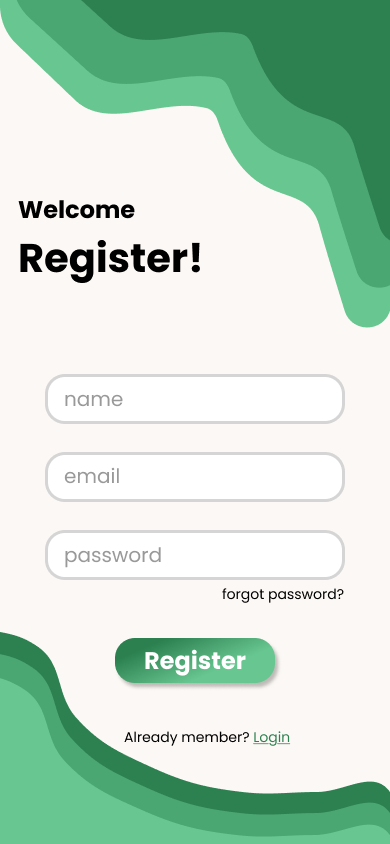
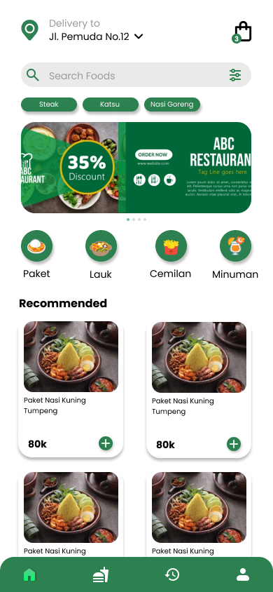
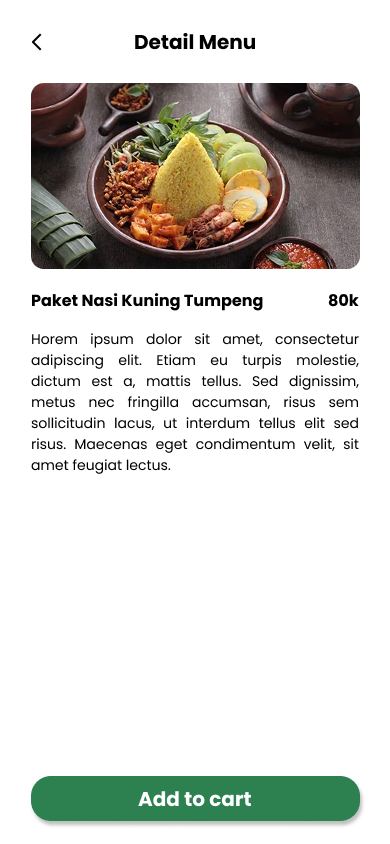
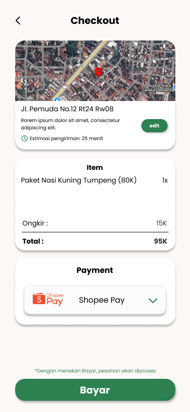

A mobile food ordering app designed to simplify daily meal ordering and improve user efficiency.





Many food ordering applications introduce unnecessary complexity at the earliest stages of use. Users often face friction during login and registration due to lengthy forms and unclear interfaces, which leads to early drop-off. In addition, the flow from browsing menus to checkout is frequently fragmented, causing confusion around pricing, delivery fees, and estimated delivery time. As a result, users struggle to complete orders efficiently and confidently.
The goal of the TasteNow project was to design a food ordering experience that feels simple, fast, and intuitive. The product aims to reduce user friction from the first interaction until payment completion, while maintaining a clean and modern visual style. Another key objective was to ensure users always understand where they are in the ordering process, how much they are paying, and when their food will arrive.
The design process began with defining the core user flow, starting from splash and authentication screens, continuing through menu discovery and item selection, and ending at checkout and payment. Wireframes were created with a mobile-first approach, prioritizing a single-column layout, clear call-to-action placement, and easy thumb reachability. The interface design focused on clarity and consistency through the use of card-based layouts, readable typography, and a green color palette to convey freshness and food-related context. High-fidelity mockups were then developed to simulate real user scenarios, including pricing details, delivery costs, and payment options.
TasteNow delivers a streamlined food ordering experience by minimizing cognitive load and guiding users naturally through each step. The authentication screens are simple and welcoming, reducing barriers for new and returning users. The home screen presents categories and recommended menus in a structured and scannable format. Menu detail pages emphasize decision-making by highlighting food imagery, pricing, and concise descriptions. The checkout flow provides transparent information regarding address, delivery time estimation, shipping cost, and total payment, while the payment screen allows users to complete transactions in a single, focused interaction.
This project reinforced the importance of designing experiences that prioritize clarity over feature quantity. Small details, such as delivery time estimation and price transparency, play a significant role in building user trust. A clean and consistent interface can make complex processes feel shorter and more manageable. If further iterations were to be developed, the product could be enhanced through order tracking features, improved empty and error states, and subtle micro-interactions to strengthen user feedback and engagement.